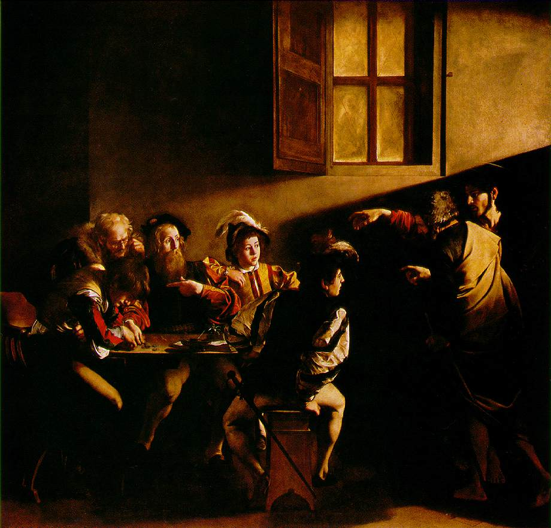
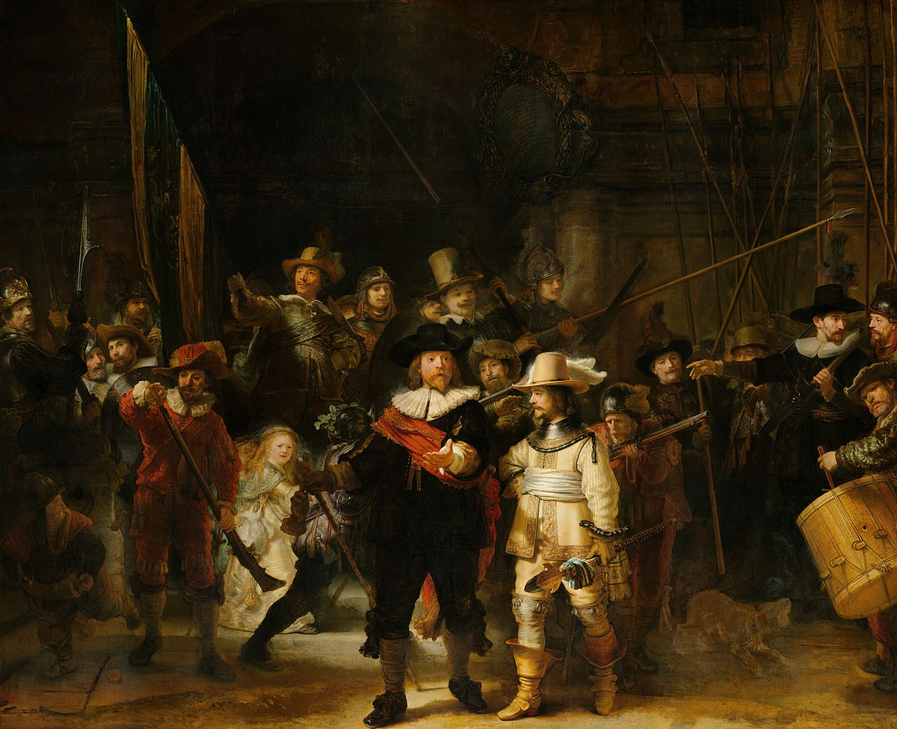
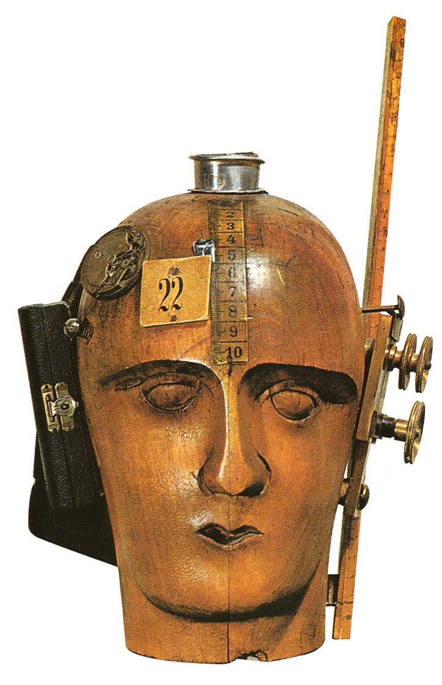
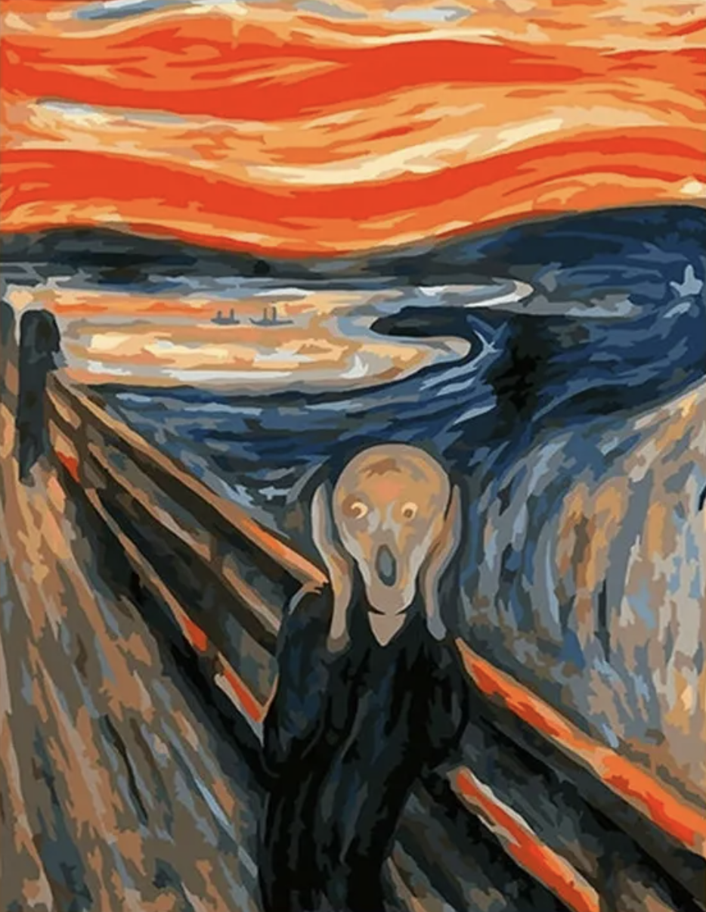
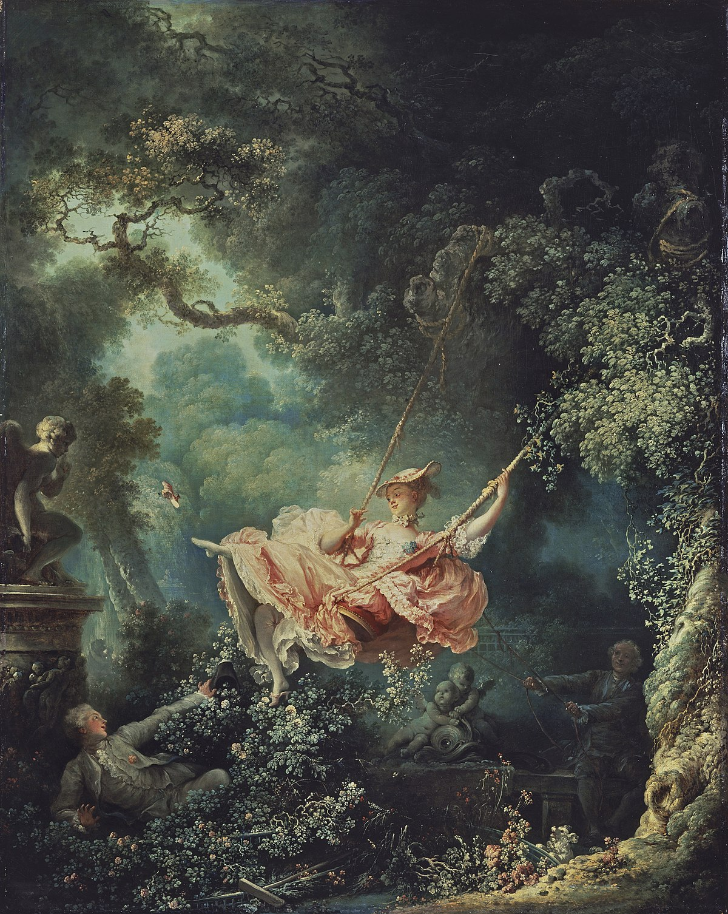

Selecione uma categoria e explore mais:
Abstrato
A arte abstrata rompe com a representação fiel da realidade, usando formas, cores e linhas para expressar emoções e ideias. Ela não busca retratar objetos reconhecíveis, mas sim explorar a liberdade criativa e a expressão subjetiva.

"Broadway Boogie Woogie" (1942-1943) - Piet Mondrian
Ritmo da energia de Nova York que cria uma 'dança visual' cheia de movimento e energia.
Saiba mais
"Número 1 (Lavanda e Verde)" (1950) - Jackson Pollock
Exemplo de 'action painting', onde o processo criativo é crucial junto ao resultado.
Saiba mais"Black Square" (1915) - Kazimir Malevich
Obra chamada de 'zero da forma'. O fim da arte tradicional e o início de uma nova era pura e abstrata.
Saiba mais"Mulher I" (1950-1952) - Willem de Kooning
Demonstração da figura feminina como um tema complexo, entre beleza e grotesco.
Saiba mais"No. 61 (Rust e Azul)" (1953) - Mark Rothko
Rothko criava 'experiências dramáticas' para serem sentidas, não apenas vistas.
Saiba mais
"A Dança" (1910) - Henri Matisse
Alegria da dança com formas simples e cores vibrantes, celebrando a vida e a liberdade.
Saiba mais
"Vermelho, Azul e Amarelo" (1930) - Piet Mondrian
Linhas retas e cores primárias para criar equilíbrio e simplicidade no neoplasticismo.
Saiba maisBarroco
A arte barroca, dos séculos XVII e XVIII, destacava-se pelo drama, emoção intensa e realismo. Usando contrastes de luz e sombra (chiaroscuro), buscava impressionar, refletindo a espiritualidade da Contrarreforma e o poder da monarquia e aristocracia.

"A Vocação de São Mateus" (1600) - Caravaggio
Uso dramático de luz e sombra para retratar o momento em que Jesus chama Mateus.
Saiba mais

"A Ronda Noturna" (1642) - Rembrandt
Retrato dinâmico de uma milícia, com jogos de luz e sombra que criam movimento.
Saiba mais
"O Cavaleiro Risonho" (1624) - Frans Hals
Retrato vibrante de um cavaleiro, capturando sua expressão alegre e espontânea.
Saiba mais"Êxtase de Santa Teresa" (1652) - Gian Lorenzo Bernini
Escultura que captura o momento místico de Santa Teresa.
Saiba mais"A Descida da Cruz" (1614) - Peter Paul Rubens
Cena dramática da crucificação de Cristo, com cores vibrantes e figuras em movimento.
Saiba mais"As Meninas" (1656) - Diego Velázquez
Retrato complexo da família real espanhola, com jogos de perspectiva e luz.
Saiba mais"Judite Decapitando Holofernes" (1620) - Artemisia Gentileschi
Cena violenta e dramática, com foco na força e determinação de Judite.
Saiba mais"Os Pastores da Arcádia" (1638) - Nicolas Poussin
Cena pastoral que reflete sobre a mortalidade, com composição equilibrada e clássica.
Saiba maisContemporâneo
A arte contemporânea, do século XX em diante, é diversa e inovadora, explorando temas sociais, políticos e tecnológicos. Sem um estilo definido, prioriza a crítica, a interação e o questionamento do que é arte.

"Baloon Dog" (1994-2000) - Jeff Koons
Koons explora a ideia de banalidade transformada em arte, questionando o valor e a função da arte na sociedade.
Saiba mais"The Physical Impossibility of Death in the Mind of Someone Living" (1991) - Damien Hirst
Hirst aborda temas como a morte e a relação entre ciência e arte.
Saiba mais"Maman" (1999) - Louise Bourgeois
Bourgeois usou a aranha como metáfora sobre sua relação complexa com a mãe simbolizando proteção, fragilidade e força.
Saiba mais"My Bed" (1998) - Tracey Emin
Representação crua e autobiográfica de um período depressivo da artista, questionando os limites entre arte e vida.
Saiba mais"The Gates" (2005) - Christo e Jeanne-Claude
7.503 portais de tecido laranja. As pessoas podem interagir com a arte de forma efêmera.
Saiba mais
"The Weather Project" (2003) - Olafur Eliasson
A obra convida o público a refletir sobre a natureza, a percepção e a experiência coletiva.
Saiba mais"One and Three Chairs" (1965) - Joseph Kosuth
A obra questiona a natureza da representação e o significado da arte conceitual.
Saiba mais"Girl with Balloon" (2002) - Banksy
A obra, muitas vezes associada a temas de esperança e perda.
Saiba maisCubismo
O Cubismo, do século XX, inovou ao fragmentar objetos em formas geométricas e múltiplas perspectivas. Dividido em Analítico (formas quebradas, cores neutras) e Sintético (colagens, cores vivas), priorizou abstração e criatividade, impactando a arte moderna.
"Les Demoiselles d'Avignon" (1907) - Pablo Picasso
Mulheres com formas angulares e distorcidas, influenciada pela arte africana e ibérica.
Saiba mais"Violino e Candeeiro" (1910) - Georges Braque
Fragmenta objetos em formas geométricas, desafiando a percepção tradicional do espaço.
Saiba mais
"A Cidade" (1919) - Fernand Léger
Paisagem urbana refletindo a modernidade e a industrialização.
Saiba mais
"O Homem do Café" (1912) - Jean Metzinger
Humano em planos geométricos, explorando a simultaneidade de perspectivas e a abstração da forma.
Saiba mais"A Torre Eiffel" (1911) - Robert Delaunay
Esta obra usa formas geométricas e cores vibrantes para capturar a energia e a modernidade do ícone parisiense.
Saiba mais"Retrato de Ambroise Vollard" (1910) - Pablo Picasso
O rosto do marchand de arte é fragmentado em múltiplas perspectivas geométricas.
Saiba mais
"O Violino" (1912) - Georges Braque
Introdução de colagens de papel e texturas, explorando a sobreposição de planos e a abstração de formas.
Saiba mais"A Dançarina" (1912) - Gino Severini
Elementos cubistas com influências futuristas, é retratado uma figura em um ambiente dinâmico e fragmentado.
Saiba maisDadaísmo
O Dadaísmo, movimento artístico e literário surgido durante a 1ª Guerra Mundial, criticava a sociedade, a arte tradicional e os valores estabelecidos. Com humor, absurdo e técnicas como colagem e ready-made, havia provocação e choque, questionando a própria essência da arte.
"Fonte" (1917) - Marcel Duchamp
Um urinol comum, apresentado como obra de arte, questionando os conceitos de autoria e valor artístico.
Saiba mais
"Corte com a Faca de Cozinha" (1919) - Hannah Höch
Colagem que critica a sociedade alemã pós-guerra, com imagens fragmentadas e satíricas.
Saiba mais"Objeto Indestrutível" (1923) - Man Ray
Um metrônomo com uma foto de um olho, simbolizando a passagem do tempo e a obsessão.
Saiba mais
"Udnie" (1913) - Francis Picabia
Pintura abstrata que mistura formas orgânicas e mecânicas, explorando a ambiguidade.
Saiba mais"Merz 460" (1922) - Kurt Schwitters
Colagem feita com objetos do cotidiano, criando uma composição caótica e poética.
Saiba mais"Colagem com Quadrados" (1916) - Jean Arp
Composição abstrata que desafia a lógica e a ordem, usando formas geométricas aleatórias.
Saiba mais

"O Espírito do Nosso Tempo" (1920) - Raoul Hausmann
Escultura que critica a sociedade mecanizada e desumanizada.
Saiba mais"Cabeça Dada" (1920) - Sophie Taeuber-Arp
Escultura abstrata que combina formas geométricas e cores vibrantes, refletindo o espírito Dada.
Saiba maisExpressionismo
O Expressionismo é um movimento do século XX que prioriza emoções intensas, usando formas distorcidas e cores vibrantes retratarando angústia e paixão, focando na visão interior e crítica social, com obras emocionalmente impactantes.

"O Grito" (1893) - Edvard Munch
Uma figura em um cenário distorcido, simbolizando a ansiedade e o desespero humano.
Saiba mais
"Noite Estrelada" (1889) - Vincent van Gogh
Um céu turbulento, expressando as emoções intensas e a visão do artista sobre a natureza.
Saiba mais"O Cavaleiro Azul" (1903) - Wassily Kandinsky
Cores vibrantes e formas fluidas para expressar emoções e espiritualidade.
Saiba mais
"Retrato de Adele Bloch-Bauer I" (1907) - Gustav Klimt
Um retrato que reflete a intensidade emocional e estética decorativa do Expressionismo.
Saiba mais
"Autorretrato com Orelha Cortada" (1889) - Vincent van Gogh
Um autorretrato sobre o sofrimento e a instabilidade emocional do artista.
Saiba mais"Mulher com Chapéu" (1905) - Henri Matisse
Um retrato vibrante que destaca a expressão emocional sobre a precisão formal.
Saiba mais"O Pequeno Cavalo Azul" (1912) - Franz Marc
Uma obra que expressa a pureza e a conexão espiritual com a natureza.
Saiba mais"A Rua" (1913) - Ernst Ludwig Kirchner
Representação caótica de uma rua urbana, capturando a agitação e a alienação da vida urbana.
Saiba maisFauvismo
O Fauvismo foi um movimento do início do século XX marcado por cores puras e vibrantes, pinceladas expressivas e formas simplificadas. Os fauvistas usavam a cor para transmitir emoções, distorcendo a realidade e abandonando o naturalismo.
"La Plage de Fécamp" (1906) - Albert Marquet
Paisagem da praia de Fécamp, com cores vibrantes e pinceladas soltas, capturando a luz do litoral.
Saiba mais"A Ponte de Londres" (1906) - André Derain
Paisagem urbana com cores não naturais, criando uma atmosfera vibrante e emocional.
Saiba mais"Restaurante da Machine" (1905) - Maurice de Vlaminck
Cena cotidiana com cores intensas e pinceladas expressivas, típicas do Fauvismo.
Saiba mais"Le Port d'Anvers" (1906) - Emile-Othon Friesz
Paisagem do porto de Antuérpia, com cores vibrantes e formas simplificadas.
Saiba mais"O Porto de Antuérpia" (1906) - Georges Braque
Paisagem portuária com cores intensas e pinceladas soltas, antes de sua transição para o Cubismo.
Saiba mais"Le Golfe" (1905) - Henri Manguin
Paisagem do golfo de Saint-Tropez, no sul da França, utilizando cores vibrantes e puras.
Saiba mais"Meninas Brincando Com Um Filhote de Leão" (1906) - Louis Valtat
Uma cena lúdica e exótica, onde garotas interagem com um filhote de leão
Saiba mais"Regata em Cowes" (1934) - Raoul Dufy
Cena de regata com cores vivas e formas simplificadas, capturando a energia e o movimento.
Saiba maisFuturismo
O Futurismo foi um movimento do início do século XX que celebrava a velocidade, a tecnologia e a modernidade, utilizando formas dinâmicas, cores vibrantes e linhas de força para capturar a energia do mundo moderno.

"Formas Únicas de Continuidade no Espaço" (1913) - Umberto Boccioni
Movimento e fluidez de uma figura em ação, simbolizando a energia moderna.
Saiba mais
"Menina Correndo na Varanda" (1912) - Giacomo Balla
O movimento através de repetições e linhas dinâmicas, capturando a energia da ação.
Saiba mais"O Funeral do Anarquista Galli" (1911) - Carlo Carrà
Cena caótica e dinâmica de um funeral, com formas fragmentadas e cores intensas.
Saiba mais"A Dança do Pan-Pan no Monico" (1911) - Gino Severini
Cena de dança, com cores e formas que transmitem movimento e energia.
Saiba mais"A revolta" (1911) - Luigi Russolo
Cena urbana caótica, com formas fragmentadas e linhas de força que capturam a agitação da cidade.
Saiba mais"Cidade Nova" (1914) - Antonio Sant'Elia
Visão futurista de uma cidade moderna, com arranha-céus e estruturas dinâmicas.
Saiba mais"Velocidade de uma Motocicleta" (1913) - Giacomo Balla
O movimento e a velocidade através de linhas dinâmicas e formas fragmentadas.
Saiba mais"A Cidade Sobe" (1910) - Umberto Boccioni
Representação da energia e do crescimento urbano, com formas fragmentadas e linhas de força.
Saiba maisGótico
O estilo Gótico (séculos XII-XVI) destacou-se pela verticalidade, luz e ornamentação. Arquitetura com arcos ogivais e vitrais; pintura e iluminura com temas religiosos realistas e expressivos.
"Catedral de Notre-Dame de Paris" (1163-1345) - Anônimo
Arquitetura gótica icônica que simboliza a verticalidade e a luz divina.
Saiba mais"Fachada da Catedral de Salisbury" (século XIII) - Anônimo
Exemplo de arquitetura gótica inglesa, com uma torre imponente e vitrais impressionantes.
Saiba mais"A Anunciação" (1333) - Simone Martini
Pintura em painel que retrata o momento da Anunciação, com detalhes refinados e cores douradas.
Saiba mais"Maestà" (1311) - Duccio di Buoninsegna
Painel central de um retábulo, representando a Virgem Maria e o Menino Jesus cercados por santos e anjos.
Saiba mais"Vitrais da Catedral de Canterbury" (século XII) - Anônimo
Vitrais que contam histórias bíblicas e da história da Inglaterra.
Saiba mais"Vitrais da Catedral de León" (século XIII) - Anônimo
Conhecida como a "Casa da Luz", possui vitrais que cobrem mais de 1.800 m².
Saiba mais
"Escadaria Dourada da Catedral de Burgos" (século XVI) - Anônimo
Com elementos góticos e renascentistas, destaca a grandiosidade da catedral.
Saiba mais"Efeitos do Bom Governo" (1338) - Ambrogio Lorenzetti
Afresco de uma vida urbana e rural sob um governo justo com detalhes realistas.
Saiba maisImpressionismo
O Impressionismo capturou luz e cores com pinceladas soltas, focando em sensações visuais e momentos passageiros. Os artistas priorizaram a percepção imediata e a expressão pessoal, revolucionando a arte e influenciando o modernismo.

"Impressão, Nascer do Sol" (1872) - Claude Monet
Retrato do porto de Le Havre ao amanhecer, com pinceladas soltas e foco na luz e cores.
Saiba mais
"Almoço na Relva" (1863) - Édouard Manet
Cena polêmica de um piquenique, desafiando convenções artísticas da época.
Saiba mais"Os Remadores" (1879) - Pierre-Auguste Renoir
Cena à beira do rio, capturando a luz do sol e a atmosfera descontraída.
Saiba mais
"Moinho da Galette" (1876) - Pierre-Auguste Renoir
Cena vibrante de um baile ao ar livre, com luz e alegria.
Saiba mais
"A Ponte Japonesa" (1899) - Claude Monet
Interação entre luz, água e vegetação no jardim de Giverny.
Saiba mais
"A Garota com o Brinco de Pérola" (1865) - Johannes Vermeer
Uso de luz e foco na expressão humana, influenciando o Impressionismo.
Saiba mais
"O Baile no Moulin de la Galette" (1876) - Pierre-Auguste Renoir
Cena festiva de um baile popular em Paris, cheia de vida e movimento.
Saiba mais"Avenida de l'Opéra" (1898) - Camille Pissarro
Vista aérea de Paris, com foco na luz e no movimento urbano.
Saiba maisMedieval
A arte medieval, entre os séculos V e XV, foi marcada pela religião e espiritualidade. Destacou-se por representações simbólicas, cores vibrantes, temas bíblicos e técnicas como vitrais, afrescos e iluminuras.

"Afrescos da Basílica de São Francisco" (século XIII) - Giotto
Cenas da vida de São Francisco, marcando a transição para o realismo na arte medieval.
Saiba mais
"O Retábulo de Ghent" (1432) - Hubert e Jan van Eyck
Uma obra-prima da pintura flamenga, que marca a transição para o Renascimento, com detalhes realistas e cores vibrantes.
Saiba mais"Livro de Kells" (século IX) - Monges Irlandeses
Manuscrito iluminado com detalhes intricados e cores vibrantes, contendo os Evangelhos.
Saiba mais
"Apocalipse de Bamberg" (século XI) - Anônimo
Manuscrito iluminado com cenas dramáticas do Apocalipse, ricamente decorado.
Saiba mais
"Tapisseria de Bayeux" (século XI) - Anônimo
Bordado que narra a conquista normanda da Inglaterra, com cenas detalhadas e narrativas.
Saiba mais"Portal Real da Catedral de Chartres" (século XII) - Anônimo
Esculturas góticas que retratam figuras bíblicas e santos, com detalhes impressionantes.
Saiba mais
"Très Riches Heures du Duc de Berry" (século XV) - Irmãos Limbourg
Manuscrito iluminado com cenas religiosas e representações da vida cotidiana.
Saiba mais"Afrescos de Santa Cecilia in Trastevere" (século IX) - Anônimo
Pinturas murais que retratam santos e cenas bíblicas em uma igreja romana.
Saiba maisMinimalismo
O Minimalismo, valoriza a simplicidade, formas geométricas puras e cores neutras. Elimina elementos supérfluos, focando na essência e na interação entre objeto, espaço e observador.
"Untitled" (1969) - Donald Judd
Escultura de caixas de metal em sequência, explorando a repetição e a simplicidade das formas.
Saiba mais"Untitled" (1960) - Agnes Martin
Pintura com linhas sutis, explorando a simplicidade e a meditação através da repetição.
Saiba mais"Untitled (L-Beams)" (1965) - Robert Morris
Escultura composta por formas geométricas que exploram a percepção do espaço e da forma.
Saiba mais"Equivalent VIII" (1966) - Carl Andre
Instalação composta por tijolos dispostos em um padrão retangular, questionando o conceito de arte e materialidade.
Saiba mais
"Untitled (to Donna)" (1971) - Dan Flavin
Luzes fluorescentes que transformam o espaço, explorando a cor e a luz como elementos artísticos.
Saiba mais"Harran II" (1967) - Frank Stella
Pintura com formas geométricas e cores vibrantes, explorando a relação entre forma e espaço.
Saiba mais
"Wall Drawing #1136" (2004) - Sol LeWitt
Desenho mural composto por linhas e formas geométricas, explorando a repetição e a simplicidade.
Saiba mais
"First" (1961) - Anne Truitt
Escultura vertical com cores sólidas, explorando a relação entre forma, cor e espaço.
Saiba maisRealismo
O Realismo, movimento do século XIX, retrata a realidade de forma objetiva, focando no cotidiano e em questões sociais, sem idealizações. Influenciou arte e literatura ao destacar desigualdades e verdades humanas.
"O Angelus" (1859) - Jean-François Millet
Retrato de camponeses em oração, simbolizando a vida simples e devoção no campo.
Saiba mais"Um Enterro em Ornans" (1850) - Gustave Courbet
Cena de um funeral rural, retratando pessoas comuns em tamanho real, rompendo com as convenções artísticas.
Saiba mais"As Lavadeiras" (1863) - Honoré Daumier
Retrato de mulheres trabalhando, destacando a vida dura das classes trabalhadoras.
Saiba mais"O Arado" (1849) - Rosa Bonheur
Cena de animais e trabalhadores rurais, destacando a relação entre humanos e natureza.
Saiba mais"A Clínica Gross" (1875) - Thomas Eakins
Retrato de uma cirurgia real, mostrando a precisão científica e a atmosfera intensa.
Saiba mais"Puberdade" (1894) - Edvard Munch
Retrato de uma jovem em um momento de transição, explorando temas de vulnerabilidade e crescimento.
Saiba mais
"Ofélia" (1852) - John Everett Millais
Cena inspirada em Shakespeare, retratando Ofélia flutuando na água com detalhes naturais realistas.
Saiba mais"Caçadores em Descanso" (1871) - Vasily Perov
Retrato de caçadores em uma pausa, explorando a vida cotidiana e a natureza.
Saiba maisRenascimento
O Renascimento, dos séculos XIV ao XVI, iniciado na Itália, destacou-se pelo humanismo, estudo da Antiguidade, perspectiva linear e naturalismo, valorizando o ser humano e a razão.

"Mona Lisa" (1503-1506) - Leonardo da Vinci
Retrato icônico que combina técnica de sfumato e expressão enigmática.
Saiba mais"A Criação de Adão" (1512) - Michelangelo
Afresco que retrata o momento em que Deus dá vida a Adão, parte do teto da Capela Sistina.
Saiba mais
"A Escola de Atenas" (1509-1511) - Rafael Sanzio
Afresco que retrata filósofos da Antiguidade, simbolizando o humanismo e o conhecimento clássico.
Saiba mais"O Nascimento de Vênus" (1485) - Sandro Botticelli
Pintura que retrata a deusa Vênus emergindo do mar, com cores suaves e formas elegantes.
Saiba mais"Vênus de Urbino" (1538) - Tiziano
Retrato sensual da deusa Vênus, com cores ricas e detalhes realistas.
Saiba mais"Autorretrato" (1500) - Albrecht Dürer
Retrato que reflete a autoimagem do artista como um intelectual e criador.
Saiba mais"O Casamento dos Arnolfini" (1434) - Jan van Eyck
Pintura que retrata um casal em seu ambiente doméstico, com detalhes realistas e simbolismo.
Saiba mais
"O Jardim das Delícias Terrenas" (1503-1515) - Hieronymus Bosch
Tríptico que retrata o paraíso, o pecado e o inferno, com detalhes fantásticos e simbólicos.
Saiba maisRococó
O Rococó, estilo do século XVIII, destacou elegância, leveza e ornamentação detalhada, com temas galantes e cores suaves, refletindo o refinamento aristocrático.

"O Balanço" (1767) - Jean-Honoré Fragonard
Cena galante e lúdica, com cores suaves e detalhes ornamentais, simbolizando a leveza e a alegria do Rococó.
Saiba mais"A Odalisca" (1745) - François Boucher
Retrato sensual e elegante, com cores suaves e detalhes decorativos, típico do estilo Rococó.
Saiba mais
"Peregrinação à ilha de Citera" (1717) - Antoine Watteau
Cena pastoral que retrata uma festa galante, com figuras elegantes e atmosfera sonhadora.
Saiba mais
"A Garota com a Raquete" (1740) - Jean-Baptiste-Siméon Chardin
Retrato intimista e delicado, com foco na simplicidade e na beleza cotidiana.
Saiba mais"Maria Antonieta com uma Rosa" (1783) - Élisabeth Louise Vigée Le Brun
Rainha Maria Antonieta, com trajes elegantes e detalhes decorativos.
Saiba mais
"A Apoteose da Família Pisani" (1761) - Giovanni Battista Tiepolo
Afresco que retrata uma cena celestial, com cores suaves e figuras em movimento.
Saiba mais
"A Senhora Sheridan" (1785) - Thomas Gainsborough
Retrato elegante e delicado, com trajes luxuosos e fundo paisagístico.
Saiba mais"A Menina Morta com seus Pássaros" (1765) - Jean-Baptiste Greuze
Cena emocional e sentimental, com foco na expressão e nos detalhes realistas.
Saiba maisSurrealismo
O Surrealismo, do século XX, explora sonhos e o inconsciente, criando cenas fantásticas que desafiam a lógica, revelando verdades ocultas e inovando a arte moderna.
"A Persistência da Memória" (1931) - Salvador Dalí
Relógios derretidos em uma paisagem onírica, explorando o conceito de tempo e realidade.
Saiba mais"O Filho do Homem" (1964) - René Magritte
Um homem de terno com um rosto oculto por uma maçã, questionando identidade e realidade.
Saiba mais
"O Elefante de Celebes" (1921) - Max Ernst
Uma criatura mecânica surrealista, criada a partir de colagens e imagens distorcidas.
Saiba mais
"O Carnaval de Arlequim" (1925) - Joan Miró
Uma cena vibrante e caótica, cheia de formas abstratas e cores vivas, explorando o inconsciente.
Saiba mais"Sonho Causado pelo Voo de uma Abelha" (1944) - Salvador Dalí
Uma cena onírica com elementos flutuantes, explorando a relação entre sonho e realidade.
Saiba mais"Mama, Papa Está Ferido!" (1927) - Yves Tanguy
Paisagem com formas orgânicas e atmosfera misteriosa, explorando o inconsciente.
Saiba mais"Metamorfoses" (1939) - André Masson
Formas fluidas e abstratas que exploram a transformação e o inconsciente.
Saiba mais"Autorretrato" (1938) - Leonora Carrington
Uma representação simbólica da artista, com elementos fantásticos e animais místicos.
Saiba mais